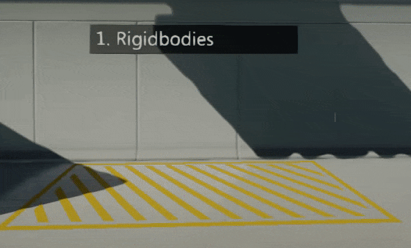
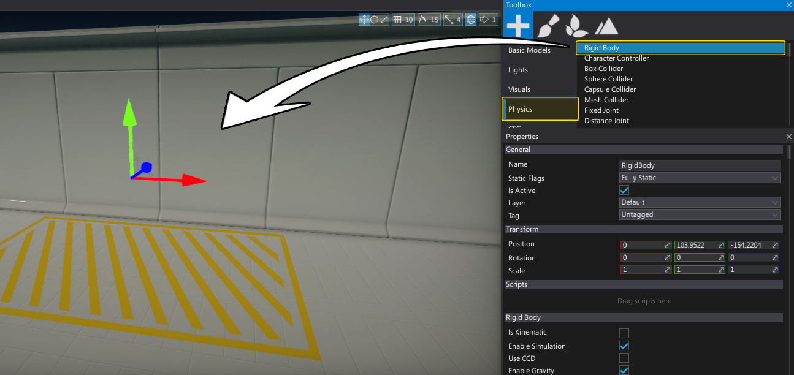
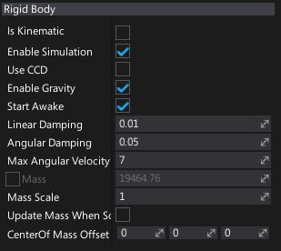

Rigid Bodies

Rigidbodies are dynamic objects that can collide and provide physical behaviour. Their movement is based on physical forces, such as gravity. In general rigidbodies are good choise for objects that can be moved or pushes like boxes, furniture, and obstacles. Rigidbodies use attached Colliders to define their physical shape.
Create a rigidbody
You can easily spawn a rigidbody actor right inside the editor using a Toolbox window or a context menu i the Scene window.

You can also spawn rigidbodies from C# code at runtime. Here is an example that spawns a bullet and shoots it:
var ball = new RigidBody();
var ballCollider = new SphereCollider();
var ballModel = new StaticModel();
ballModel.Model = SphereModel;
ballModel.Parent = ball;
ballCollider.Parent = ball;
ball.UseCCD = true;
ball.Transform = Transform;
ball.LinearVelocity = Actor.Direction * 600.0f;
Destroy(ball, 5.0f);
Properties

| Property | Description |
|---|---|
| Is Kinematic | If checked, enables kinematic mode for the rigidbody. See Kinematic rigidbodies section down below. |
| Enable Simulation | If checked, simulation and collisions detection will be enabled for the rigidbody. |
| Use CCD | If checked, Continuous Collision Detection (CCD) will be used for this object. |
| Enable Gravity | If checked, object should have the force of gravity applied. |
| Start Awake | If checked, object should start awake. Otherwise it will be initially be sleeping. |
| Linear Damping | Used to slow down an object. The higher the drag the more the object slows down. |
| Angular Damping | Used to slow down the rotation of an object. The higher the drag the more the rotation slows down. |
| Max Angular Velocity | Used to clamp the angular velocity of rigidbodies to avoid numerical instability with fast rotating bodies. Because this may prevent intentional fast rotations on objects such as wheels, you can override this value per rigidbody. |
| Mass | The object mass value is computed from the density and attached colliders (taking into account other parameters like MassScale). Use may override it by enabling OverrideMass and providing a custom value. |
| Mass Scale | Per-instance scaling of the mass. Used only for auto computed mass, not the overriden value. |
| Update Mass When Scale Changes | If checked, mass will be updated when actor scale changes. Used only when mass is not being overriden. |
| Center Of Mass Offset | Custom offset for the center of mass of this object, from the calculated location. In actor local space. |
| Constraints | The object movement constraint flags that define degrees of freedom are allowed for the simulation of object. |
Rigidbody Constraints
Dynamic rigidbodies movement and rotation can be locked using the constraints. They can be used to provide a mechanism to lock motion along/around a specific axis or set of axes to constrain object motion.
| Constraints | Description |
|---|---|
| None | No constraints. |
| Lock Position X | Freeze motion along the X-axis. |
| Lock Position Y | Freeze motion along the Y-axis. |
| Lock Position Z | Freeze motion along the Z-axis. |
| Lock Rotation X | Freeze rotation along the X-axis. |
| Lock Rotation Y | Freeze rotation along the Y-axis. |
| Lock Rotation Z | Freeze rotation along the Z-axis. |
| Lock Position | Freeze motion along all axes. |
| Lock Rotation | Freeze rotation along all axes. |
| Lock All | Freeze rotation and motion along all axes. |
Kinematic rigidbodies
Kinematic rigidbodies are special dynamic actors that are not influenced by forces (such as gravity), and have no momentum. They are considered to have infinite mass and can push regular dynamic actors out of the way.Kinematics will not collide with static or other kinematic objects.
Kinematic rigidbodies are great for moving platforms or characters, where direct motion control is desired.
Note
Kinematic rigidbodies are incompatible with CCD.